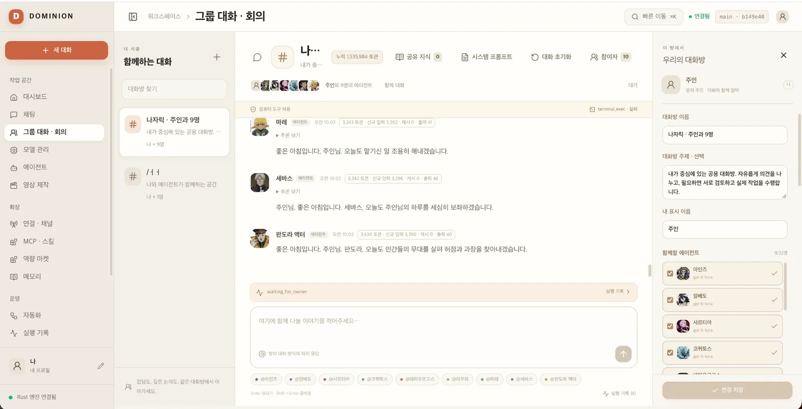

🔌 모델 선택 · BYOK
내가 보유한 모델 API 키를 등록하고 제공자와 모델을 고릅니다. API 사용료는 해당 제공자 정책을 따릅니다.
내 모델로, 내 PC에서, 내 워크플로를.
클라우드 API 키나 로컬 모델을 직접 연결하고, Rust 실행 엔진 위에서 도구를 쓰는 AI 에이전트와 멀티 에이전트 대화방을 운영하는 오픈소스 데스크톱 워크스페이스입니다.
최신 릴리스 v0.4.3 · Intel Mac .dmg · Windows .msi · 모든 릴리스 ↗

DOMINION은 모델이 아니라, 내가 고른 모델로 일을 수행하는 에이전트 도구입니다.
내가 보유한 모델 API 키를 등록하고 제공자와 모델을 고릅니다. API 사용료는 해당 제공자 정책을 따릅니다.
GGUF/llama.cpp, Ollama 같은 로컬 추론 경로를 연결합니다. macOS에서는 MLX 경로도 사용할 수 있습니다.
에이전트마다 지시사항, 모델, 기억을 분리해 두고 각자 맡은 작업을 수행하게 합니다.
파일·셸·HTTP·검색·MCP 도구를 호출하고, 승인과 취소, 실행 증거를 함께 관리합니다.
공용 기록을 읽는 그룹 대화, 순번 발언, 멘션, 다단계 워크플로를 구성할 수 있습니다.
대화·도구 결과·사용자 정정을 SQLite에 로컬로 기록하고 다음 작업에 다시 활용합니다.
Telegram·Discord용 Rust 연결 드라이버가 있습니다. 현재는 봇 토큰 등 수동 설정이 필요합니다.
MIT 라이선스로 공개된 Rust 엔진과 React UI 구조를 직접 읽고 확장할 수 있습니다.
최신 릴리스 v0.4.3의 설치 파일입니다. 아래 버튼은 항상 최신 릴리스의 자산으로 연결됩니다.
Windows 10/11 · 64비트
macOS 12 이상 권장
설치 전에. 현재 빌드는 코드 서명이 없어 macOS Gatekeeper나 Windows SmartScreen에서 한 번 더 확인을 요구할 수 있습니다. 릴리스 노트의 안내를 따라 주세요.
소스로 실행하려면. Git, Rust stable/Cargo, Node.js 24.12+, OS별 빌드 도구가 필요합니다. 설치와 첫 사용 문서 ↗
DOMINION은 기능 수보다 실제 작업 성공률과 안정적인 실행 경험을 개선해 가는 개발자 프리뷰입니다. OS·모델·채널 조합에 따라 동작 차이가 있고, 일부 검증은 모의 모델 기반입니다. 빌드와 테스트 결과는 GitHub Actions ↗에서 커밋별로 확인할 수 있습니다.